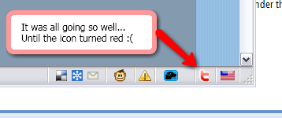

Firefox 3, Twitter, Twitterfox and suspended reality
There has been a lot of negative press around Twitter around the blogosphere lately. I still run into a lot of clients especially who ask me what the point of Twitter is and I explain the concept of micro-blogging to them and the beauty of API which 9 times out of 10 draws a blank stare. But my focus today is about usability and Twitter. I just freshly downloaded and installed Firefox 3, and to my utter joy and astonishment 95% of my add-ons updated automatically and now work in the svelte new interface that is FF3. One of the add-ons that didn’t upgrade properly was my twitterbar extension which has proved very useful, if not a little clunky over the last few months. So in search of an upgrade, I went to the FF add-ons webpage and searched for a new Twitter extension. And lo and behold, I found something that made me feel joys in my soulz. A little plugin called TwitterFox. In every way it exceeded my expectations (which were still resting on the laurels of Twitterbar). I installed, and the interface, functionality and workflow was beautiful. I tweeted how it was going to change my twitter experience forever. I even caught a few @ messages I had missed before. I was so happy, that I forgot momentarily about Twitters woes and the questionable ‘meant to be a CMS but is something else altogether’ system its built on. Oh well, at least I still have my beautiful red TwitterFox icon. 
{kind=link}